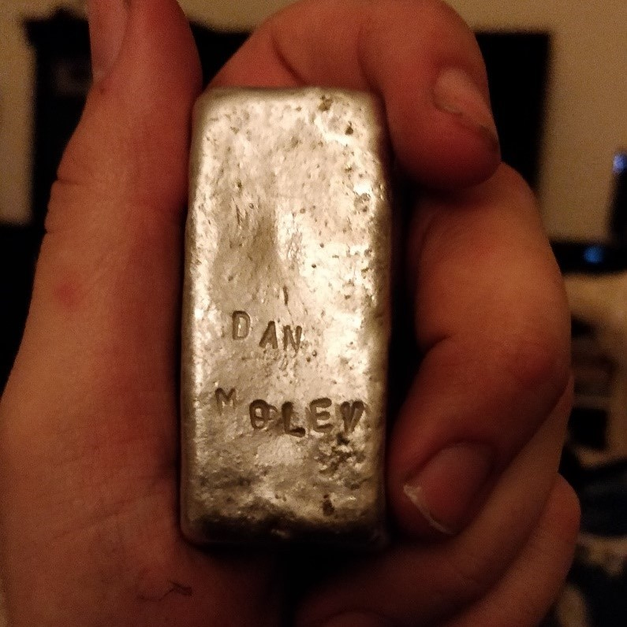

Well apparently for CSC290 I am forced to write a blog post every week and I find it much easier to just direct you to GitHub if you want to learn more about me. Of course, I don’t want to get as my teacher would say “Zero bigger then you face”, I will introduce myself and continue to write these blog posts.
Anyways my name as you guessed it is Daniel Molev, I am currently in 3rd year and I am studying Computer Science, Mathematics, and Statistic. What’s unique about me is that like the man in Dos Equis beer commercials I like to Travel the World and posses many interesting skills. For example, I build myself a Metal Foundry and use it to melt aluminum cans into an aluminum bar. What I hope to do next is to use these bars to melt them into an apple or an interesting object when I have the time.
I feel it’s only fair if you read this far you should probably know some of my strengths and weaknesses. Let’s start with my we strengths, one of my best qualities is that I think outside the box. I can give many such examples, but my favorite example is when I was a kid at elementary school during the famous egg drop project. Everyone built as lightweight of a contraption as possible, such as using 2 pillows or using a parachute. What I did is fill a can with water (cold water I am not a cheater) and put smaller can inside with the egg. At the time everyone laughed at me and said it wouldn’t work but guess what it worked. If you are reading this what I want you to learn from this story is that working with me you have to have an open mind.
To finish this blog post, what I want to get out of this course is first and foremost 4.0 in course so that my CGPA increases and I can get into the CS major. Secondly and probably what’s more important outside my time at university is improving my communication skills so that I can better get my point of view across.
As for my weakness, one of my biggest problems is that I have difficulty focusing on a single task. Like my interest one minute I decide to melt aluminum, the next minute I like to watch and paint a Bob Ross painting, and next really any random thing you can think of. If you want to work with me successfully, I work best when I am given one task at a time instead of everything at once. Otherwise, I will work on everything and at once and get nothing done.
To finish this blog post, what I want to get out of this course is first and foremost 4.0 in the course so that my CGPA increases and I can get into the CS major. Secondly and probably what’s more important outside my time at university is improving my communication skills so that I can better get my point of view across.